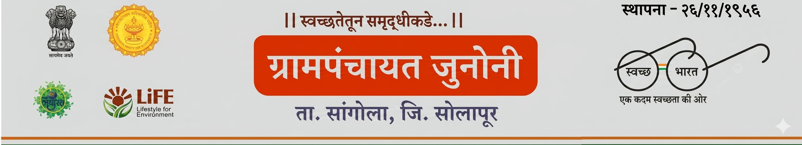
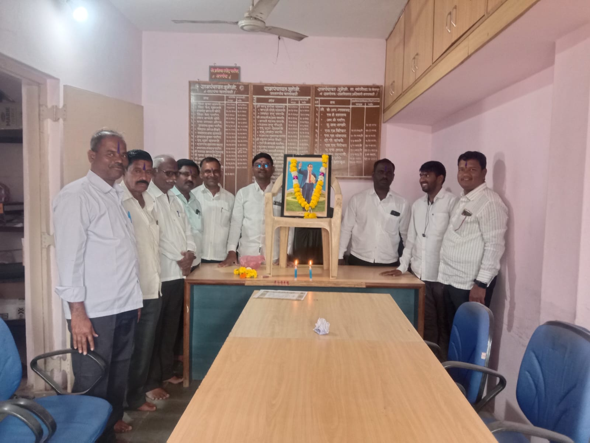
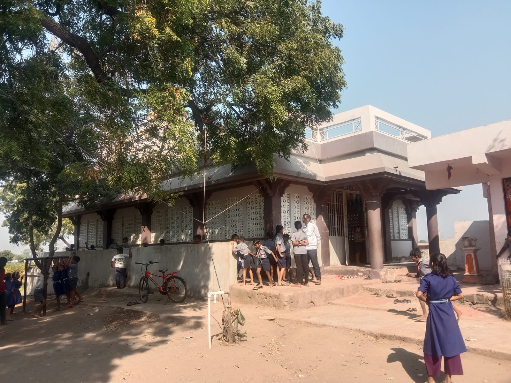

२०११ च्या जनगणनेनुसार जुनोनी गावाचा लोकेशन कोड / ग्रामकोड 562579 आहे. जुनोनी हे भारताच्या महाराष्ट्र राज्यातील सोलापूर जिल्ह्यातील सांगोला तालुक्यातील एक गाव आहे. हे गाव उपजिल्हा मुख्यालय सांगोला (तहसीलदार कार्यालय) पासून ३५ किमी आणि जिल्हा मुख्यालय सोलापूर पासून १४८ किमी अंतरावर आहे. २००९ च्या आकडेवारीनुसार गावाचे एकूण भौगोलिक क्षेत्र २२४२ हेक्टर आहे. जुनोनीची एकूण लोकसंख्या ४,२४५ असून त्यापैकी पुरुषांची लोकसंख्या २,१७२ तर महिलांची लोकसंख्या २,०७३ आहे. त्यामुळे दर 1,000 पुरुषांमागे अंदाजे 954 स्त्रियांचे लिंग गुणोत्तर आहे. जुनोनी गावाचा साक्षरता दर ६९.४९% असून त्यापैकी ७९.१४% पुरुष व ५९.४२% स्त्रिया साक्षर आहेत. जुनोनी गावात सुमारे ७६९ घरे आहेत. जुनोनी गाव परिसरातील पिनकोड 413307 आहे. प्रशासनाचा विचार केला तर जुनोनी गावाचा कारभार भारतीय राज्यघटना आणि पंचायती राज कायद्यानुसार स्थानिक निवडणुकांद्वारे निवडलेल्या लोकप्रतिनिधी (गावप्रमुख) सरपंचामार्फत चालविला जातो. जुनोनी गाव सांगोला विधानसभा मतदारसंघ आणि माढा लोकसभा मतदारसंघात येते. सर्व प्रमुख आर्थिक उपक्रमांसाठी सांगोला हे जवळचे शहर असून ते अंदाजे ३५ किमी अंतरावर आहे.
ग्रामपंचायतीमध्ये खालील प्रमुख पदांचा समावेश असतो: सरपंच ग्रामपंचायतीचे प्रमुख उपसरपंच सरपंचांना सहाय्य करणारे पद सदस्य विविध वॉर्डचे प्रतिनिधी ग्रामविकास समिती हे सर्व सदस्य ग्रामस्थांच्या मतदानाद्वारे निवडले जातात आणि गावाच्या सर्वांगीण विकासासाठी कार्य करतात.
गावामध्ये सर्व समाजघटकांना न्याय्य प्रतिनिधित्व मिळावे यासाठी आरक्षण व्यवस्था लागू आहे. यामध्ये खालील प्रवर्गांचा समावेश होतो: अनुसूचित जाती (SC) अनुसूचित जमाती (ST) इतर मागासवर्ग (OBC) महिला आरक्षण सर्वसाधारण प्रवर्ग या व्यवस्थेमुळे सामाजिक समता राखली जाते आणि प्रत्येक घटकाला गावाच्या विकासामध्ये सहभागाची संधी मिळते.
ग्रामपंचायत खालील विकासकामांवर विशेष भर देते: स्वच्छ पिण्याच्या पाण्याची व्यवस्था रस्ते बांधकाम व दुरुस्ती शाळा व शिक्षण सुविधा आरोग्य व स्वच्छता अभियान शेतकऱ्यांसाठी कृषी सहाय्य शासकीय योजनांची अंमलबजावणी महिला बचत गट व सक्षमीकरण युवकांचा विकास व सहभाग गावातील सर्व नागरिकांचे जीवनमान उंचावण्यासाठी ग्रामपंचायत सातत्याने प्रयत्न करते.